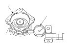
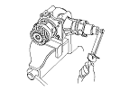
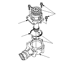
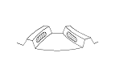

Transfer Inspection
Transfer Gear (Hypoid gear) Backlash Measurement
Set a dial indicator (A) on the companion flange (B) as shown.
Measure the transfer gear backlash.
STANDARD:
0.06−0.16 mm (0.002−0.006 in.)

Total Starting Torque Measurement
Rotate the companion flange several times to seat the tapered roller bearing.
Measure the starting torque (companion flange side) using a torque wrench.
NOTE: To prevent damage to the transfer housing, always use soft jaws or equivalent materials between the transfer housing and the vise.
STANDARD:
2.24−3.71 N·m
(22.0−36.4 kgf·cm, 19.1−31.6 lbf·in.)

Transfer Drive Gear Tooth Contact Inspection
Remove the transfer from the vise.
Remove the transfer holder assembly (A) from the transfer housing (B), then remove the dowel pins (C) and O-ring (D).
Apply Prussian Blue to the transfer drive gear teeth lightly and evenly.
Install the transfer holder assembly to the transfer housing, then tighten the bolts.
Rotate the companion flange in both directions until the transfer gear rotates one full turn in both directions.

Check the transfer gear tooth contact pattern.
If the measurements or the tooth contact pattern are not within the standard, disassemble the transfer assembly, replace worn or damaged parts, and reassemble it.
